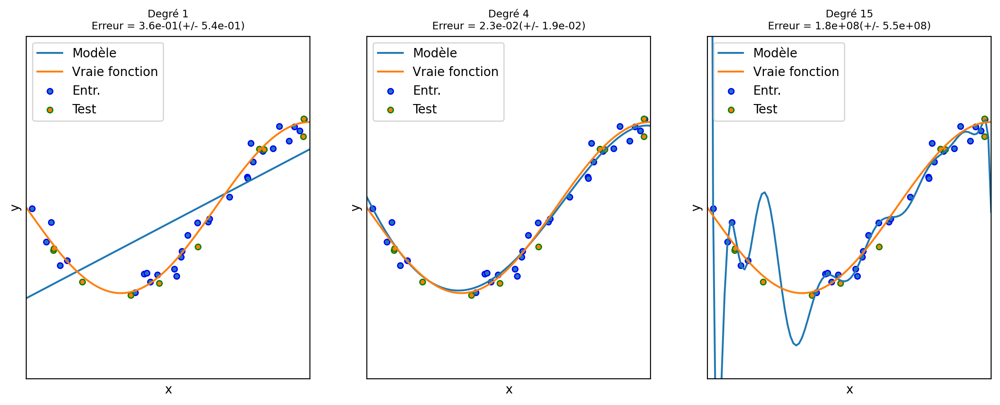
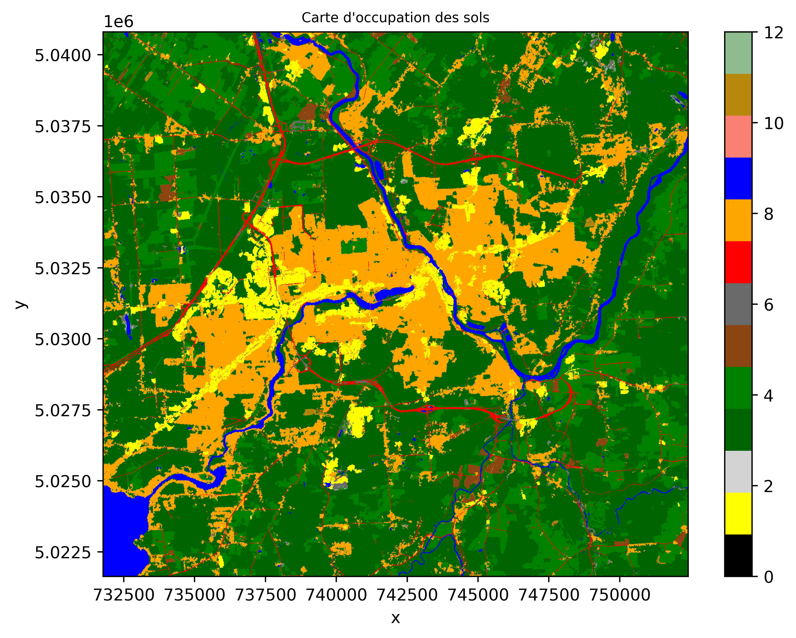
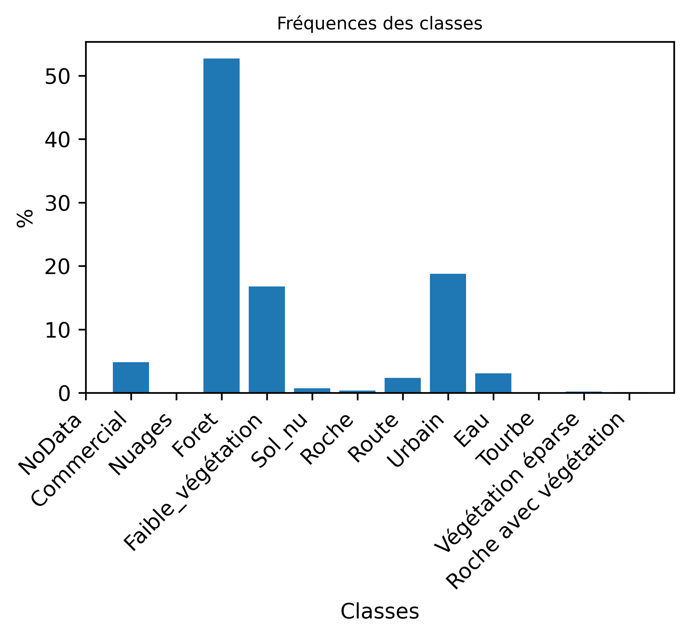
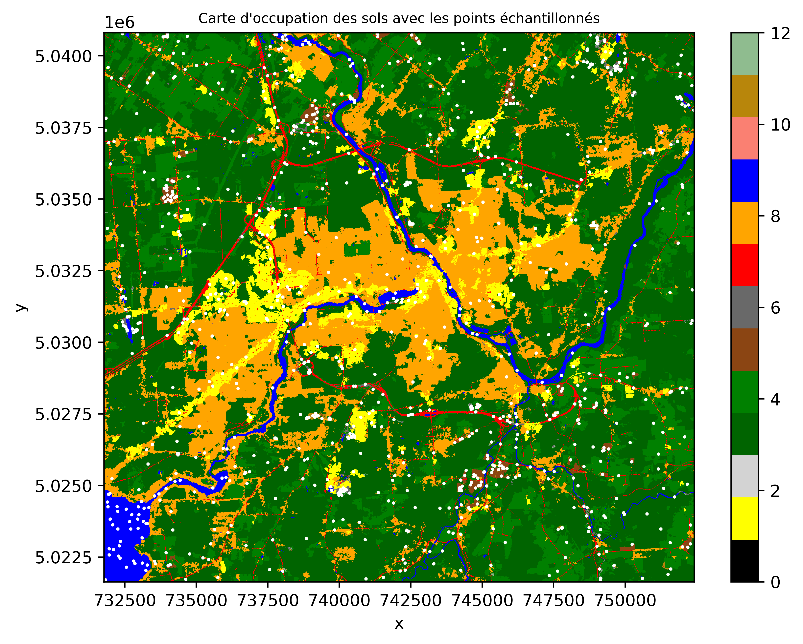
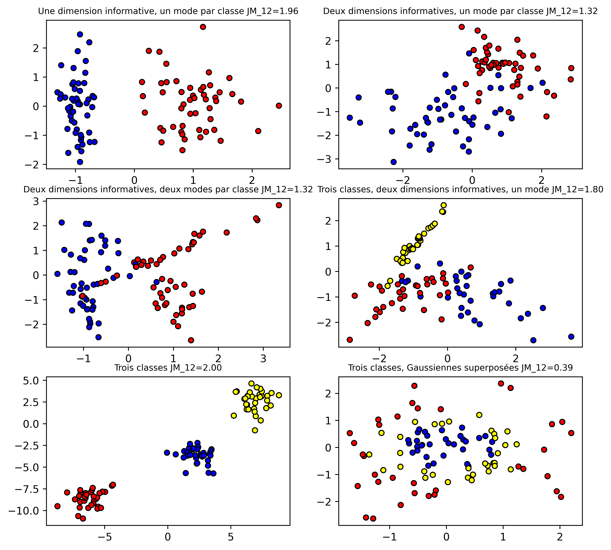
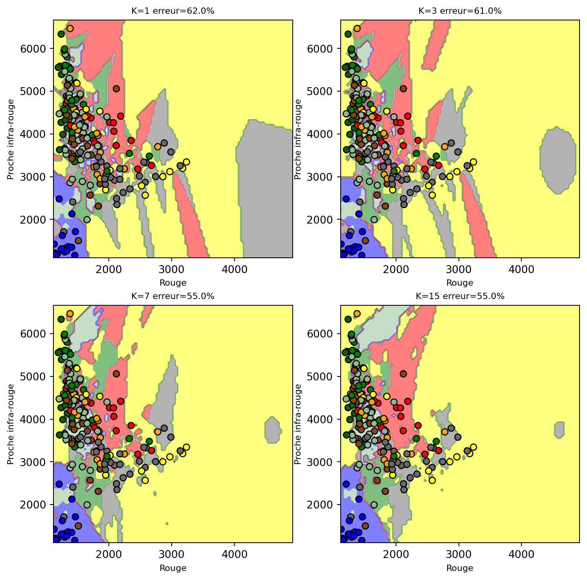
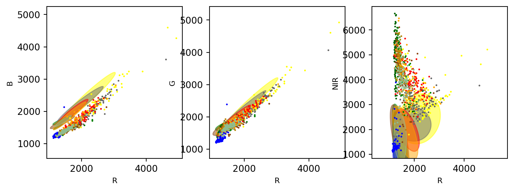
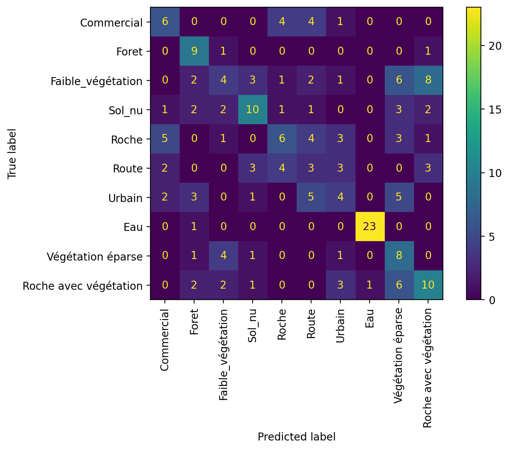
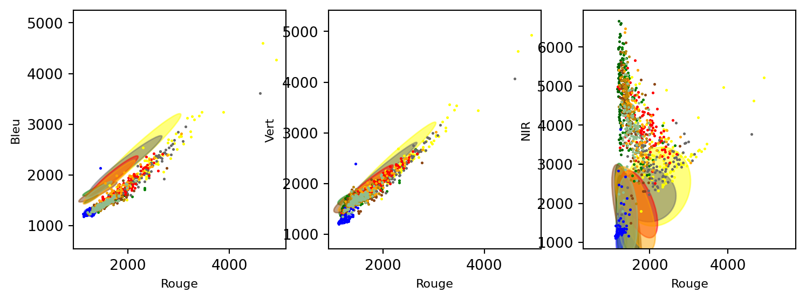

%%capture
!pip install -qU matplotlib rioxarray xrscipy6 Classifications d’images supervisées
6.1 🚀 Préambule
Assurez-vous de lire ce préambule avant d’exécutez le reste du notebook.
6.1.1 🎯 Objectifs
Dans ce chapitre, nous ferons une introduction générale à l’apprentissage automatique et abordons quelques techniques fondamentales. La librairie centrale utilisée dans ce chapitre sera sickit-learn. Ce chapitre est aussi disponible sous la forme d’un notebook Python sur Google Colab:

6.1.2 Librairies
Les librairies utilisées dans ce chapitre sont les suivantes:
Dans l’environnement Google Colab, seul rioxarray et xrscipy doit être installés:
Vérifier les importations nécessaires en premier:
import numpy as np
import rioxarray as rxr
from scipy import signal
import xarray as xr
import rasterio
import xrscipy
import matplotlib.pyplot as plt
from matplotlib.colors import ListedColormap
import geopandas
from shapely.geometry import Point
import pandas as pd
from numba import jit
from sklearn.neighbors import KNeighborsClassifier
from sklearn.model_selection import train_test_split
from sklearn.pipeline import Pipeline
from sklearn.preprocessing import StandardScaler
from sklearn.inspection import DecisionBoundaryDisplay
from sklearn.discriminant_analysis import LinearDiscriminantAnalysis, QuadraticDiscriminantAnalysis
from sklearn.datasets import make_blobs, make_classification, make_gaussian_quantiles6.1.3 Images utilisées
Nous allons utilisez les images suivantes dans ce chapitre:
%%capture
import gdown
gdown.download('https://drive.google.com/uc?export=download&confirm=pbef&id=1a6Ypg0g1Oy4AJt9XWKWfnR12NW1XhNg_', output= 'RGBNIR_of_S2A.tif')
gdown.download('https://drive.google.com/uc?export=download&confirm=pbef&id=1a4PQ68Ru8zBphbQ22j0sgJ4D2quw-Wo6', output= 'landsat7.tif')
gdown.download('https://drive.google.com/uc?export=download&confirm=pbef&id=1_zwCLN-x7XJcNHJCH6Z8upEdUXtVtvs1', output= 'berkeley.jpg')
gdown.download('https://drive.google.com/uc?export=download&confirm=pbef&id=1dM6IVqjba6GHwTLmI7CpX8GP2z5txUq6', output= 'SAR.tif')
gdown.download('https://drive.google.com/uc?export=download&confirm=pbef&id=1aAq7crc_LoaLC3kG3HkQ6Fv5JfG0mswg', output= 'carte.tif')Vérifiez que vous êtes capable de les lire :
with rxr.open_rasterio('berkeley.jpg', mask_and_scale= True) as img_rgb:
print(img_rgb)
with rxr.open_rasterio('RGBNIR_of_S2A.tif', mask_and_scale= True) as img_rgbnir:
print(img_rgbnir)
with rxr.open_rasterio('SAR.tif', mask_and_scale= True) as img_SAR:
print(img_SAR)
with rxr.open_rasterio('carte.tif', mask_and_scale= True) as img_carte:
print(img_carte)6.2 Principes généraux
Une classification supervisée ou dirigée consiste à attribuer une étiquette (une classe) de manière automatique à chaque point d’un jeu de données. Cette classification peut se faire à l’aide d’une cascade de règles pré-établies (arbre de décision) ou à l’aide de techniques d’apprentissage automatique (machine learning). L’utilisation de règles pré-établies atteint vite une limite car ces règles doivent être fournies manuellement par un expert. Ainsi, l’avantage de l’apprentissage automatique est que les règles de décision sont dérivées automatiquement du jeu de données via une phase dite d’entraînement. On parle souvent de solutions générées par les données (Data Driven Solutions). Cet ensemble de règles est souvent appelé modèle. On visualise souvent ces règles sous la forme de frontières de décisions dans l’espace des données. Cependant, un des défis majeur de ce type de technique est d’être capable de produire des règles qui soient généralisables au-delà du jeu d’entraînement.
Les classifications supervisées ou dirigées présupposent donc que nous avons à disposition un jeu d’entraînement déjà étiqueté. Celui-ci va nous permettre de construire un modèle. Afin que ce modèle soit représentatif et robuste, il nous faut assez de données d’entraînement. Les algorithmes d’apprentissage automatique sont très nombreux et plus ou moins complexes pouvant produire des frontières de décision très complexes et non linéaires.
curse of dimensionnality, capacité d’un modèle, sur-aprrentissage, sous-apprentissage
6.2.1 Comportement d’un modèle
Cet exemple tiré de sickit-learn illustre les problèmes d’ajustement insuffisant ou sous-apprentissage (underfitting) et d’ajustement excessif ou sur-apprentissage (overfitting) et montre comment nous pouvons utiliser la régression linéaire avec un modèle polynomiale pour approximer des fonctions non linéaires. La figure 6.1 montre la fonction que nous voulons approximer, qui est une partie de la fonction cosinus (couleur orange). En outre, les échantillons de la fonction réelle et les approximations de différents modèles sont affichés en bleu. Les modèles ont des caractéristiques polynomiales de différents degrés. Nous pouvons constater qu’une fonction linéaire (polynôme de degré 1) n’est pas suffisante pour s’adapter aux échantillons d’apprentissage. C’est ce qu’on appelle un sous-ajustement (underfitting) qui produit un biais systématique quelque soit les points d’entraînement. Un polynôme de degré 4 se rapproche presque parfaitement de la fonction réelle. Cependant, pour des degrés plus élevés, le modèle s’adaptera trop aux données d’apprentissage, c’est-à-dire qu’il apprendra le bruit des données d’apprentissage. Nous évaluons quantitativement le sur-apprentissage et le sous-apprentissage à l’aide de la validation croisée. Nous calculons l’erreur quadratique moyenne (EQM) sur l’ensemble de validation. Plus elle est élevée, moins le modèle est susceptible de se généraliser correctement à partir des données d’apprentissage.

On constate aussi que sans les échantillons de validation, nous serions incapable de déterminer la situation de sur-apprentissage, l’erreur sur les points d’entraînement seul étant excellente pour un degré 15.
6.2.2 Pipeline
La construction d’un modèle implique généralement toujours les mêmes étapes illustrées sur la figure figure 6.2:
La préparation des données implique parfois un pré-traitement afin de normaliser les données.
Partage des données en trois groupes: entraînement, validation et test
L’apprentissage du modèle sur l’ensemble d’entraînement. Cet apprentissage nécessite de déterminer les valeurs des hyper-paramètres du modèle par l’usager.
La validation du modèle sur l’ensemble de validation. Cette étape vise à vérifier que les hyper-paramètres du modèle sont adéquate.
Enfin le test du modèle sur un ensemble de donnée indépendant
flowchart TD
A[fa:fa-database Données] --> B(fa:fa-gear Prétraitement)
B --> C(fa:fa-folder-tree Partage des données) -.-> D(fa:fa-gears Entraînement)
H[[Hyper-paramètres]] --> D
D --> |Modèle| E>Validation]
E --> |Modèle| G>Test]
C -.-> E
C -.-> G
6.2.3 Construction d’un ensemble d’entraînement
Les données d’entraînement vont permettre de construire un modèle. Ces données peuvent prendre des formes très variées mais on peut voir cela sous la forme d’un tableau \(N \times D\):
La taille \(N\) du jeu de donnée
Chaque entrée définit un échantillon ou un point dans un espace à plusieurs dimension.
Chaque échantillon est décrit par \(D\) dimensions ou caractéristiques (features).
Une façon simple de construire un ensemble d’entraînement est d’échantillonner un produit existant. Nous allons utiliser la carte d’occupation des sols suivante qui contient 12 classes différentes.
couleurs_classes= {'NoData': 'black', 'Commercial': 'yellow', 'Nuages': 'lightgrey',
'Foret': 'darkgreen', 'Faible_végétation': 'green', 'Sol_nu': 'saddlebrown',
'Roche': 'dimgray', 'Route': 'red', 'Urbain': 'orange', 'Eau': 'blue', 'Tourbe': 'salmon', 'Végétation éparse': 'darkgoldenrod', 'Roche avec végétation': 'darkseagreen'}
nom_classes= [*couleurs_classes.keys()]
couleurs_classes= [*couleurs_classes.values()]On peut visualiser la carte de la façon suivante:
import matplotlib.pyplot as plt
import rioxarray as rxr
cmap_classes = ListedColormap(couleurs_classes)
fig, ax = plt.subplots(nrows=1, ncols=1, figsize=(8, 6))
img_carte.squeeze().plot.imshow(cmap=cmap_classes, vmin=0, vmax=12)
ax.set_title("Carte d'occupation des sols", fontsize="small")Text(0.5, 1.0, "Carte d'occupation des sols")
On peut facilement calculer la fréquence d’occurrence des 12 classes dans l’image à l’aide de numpy:
img_carte= img_carte.squeeze() # nécessaire pour ignorer la dimension du canal
compte_classe = np.unique(img_carte.data, return_counts=True)
print(compte_classe)(array([ 1., 3., 4., 5., 6., 7., 8., 9., 11., 12., nan],
dtype=float32), array([ 193598, 2129001, 679481, 29986, 14769, 95462, 751682,
125023, 9149, 4379, 10]))La fréquence d’apparition de chaque classe varie grandement, on parle alors d’un ensemble déséquilibré. Ceci est très commun dans la plupart des ensembles d’entraînement, les classes n’apparaissent pas avec la même fréquence.
valeurs, comptes = compte_classe
# Create the histogram
plt.figure(figsize=(5, 3))
plt.bar(valeurs, comptes/comptes.sum()*100)
plt.xlabel("Classes")
plt.ylabel("%")
plt.title("Fréquences des classes", fontsize="small")
plt.xticks(range(len(nom_classes)), nom_classes, rotation=45, ha='right')
plt.show()
On peut échantillonner 100 points aléatoires pour chaque classe:
img_carte= img_carte.squeeze()
class_counts = np.unique(img_carte.data, return_counts=True)
# Liste vide des points échantillonnées
sampled_points = []
class_labels= [] # contient les étiquettes des classes
for class_label in range(1,13): # pour chacune des 12 classes
# On cherche tous les pixels pour cette étiquette
class_pixels = np.argwhere(img_carte.data == class_label)
# On se limite à 100 pixels par classe
n_samples = min(100, len(class_pixels))
# On les choisit les positions aléatoirement
np.random.seed(0) # ceci permet de répliquer le tirage aléatoire
sampled_indices = np.random.choice(len(class_pixels), n_samples, replace=False)
# On prends les positions en lignes, colonnes
sampled_pixels = class_pixels[sampled_indices]
# On ajoute les points à la liste
sampled_points.extend(sampled_pixels)
class_labels.extend(np.array([class_label]*n_samples)[:,np.newaxis])
# Conversion en NumPy array
sampled_points = np.array(sampled_points)
class_labels = np.array(class_labels)
# On peut naviguer les points à l'aide de la géoréférence
transformer = rasterio.transform.AffineTransformer(img_carte.rio.transform())
transform_sampled_points= transformer.xy(sampled_points[:,0], sampled_points[:,1])
fig, ax = plt.subplots(nrows=1, ncols=1, figsize=(8, 6))
img_carte.squeeze().plot.imshow(cmap=cmap_classes, vmin=0, vmax=12)
ax.scatter(transform_sampled_points[0], transform_sampled_points[1], c='w', s=1) # Plot sampled points
ax.set_title("Carte d'occupation des sols avec les points échantillonnés", fontsize="small")
plt.show()
Une fois les points sélectionnés, il faut ajouter les valeurs des bandes provenant d’une image satellite. Pour cela, on peut utiliser la méthodes sample() de rasterio. Éventuellement, la librairie geopandas permet de gérer les données d’entraînement sous la forme d’un tableau transportant aussi l’information de géoréférence. Afin de pouvoir classifier ces points, nous allons ajouter les valeurs radiométriques provenant de l’image Sentinel-2 à 4 bandes RGBNIR_of_S2A.tif. Ces valeurs seront stockées dans la colonne value sous la forme d’un vecteur en format string:
points = [Point(xy) for xy in zip(transform_sampled_points[0], transform_sampled_points[1])]
gdf = geopandas.GeoDataFrame(range(1,len(points)+1), geometry=points, crs=img_carte.rio.crs)
coord_list = [(x, y) for x, y in zip(gdf["geometry"].x, gdf["geometry"].y)]
with rasterio.open('RGBNIR_of_S2A.tif') as src:
gdf["value"] = [x for x in src.sample(coord_list)]
gdf['class']= class_labels
gdf.to_csv('sampling_points.csv') # sauvegarde sous forme d'un format csv
gdf.head()| 0 | geometry | value | class | |
|---|---|---|---|---|
| 0 | 1 | POINT (749009.567 5035771.5) | [2404, 2664, 2796, 2983] | 1 |
| 1 | 2 | POINT (737761.905 5031580.999) | [1960, 2334, 2232, 3315] | 1 |
| 2 | 3 | POINT (737791.766 5030117.808) | [2696, 2836, 2792, 3211] | 1 |
| 3 | 4 | POINT (734138.764 5027221.286) | [1856, 2096, 2108, 3878] | 1 |
| 4 | 5 | POINT (738339.219 5039404.594) | [1727, 2028, 1913, 4023] | 1 |
6.3 Analyse préliminaire des données
Une bonne pratique avant d’appliquer une technique d’apprentissage automatique est de regarder les caractéristiques de vos données:
Le nombre de dimensions (features)
Certaines dimensions sont informatives (discriminantes) et d’autres ne le sont pas
Le nombre classes
Le nombre de modes (clusters) par classes
Le nombre d’échantillons par classe
La forme des groupes
La séparabilité des classes ou des groupes
Une manière d’évaluer la séparabilité de vos classes est d’appliquer des modèles Gaussiens sur chacune des classes. Le modèle Gaussien multivarié suppose que les données sont distribuées comme un nuage de points symétrique et unimodale. La distribution d’un point \({\bold x}\) appartenant à la classe \(i\) est la suivante:
\[ P(\bold{x} | Classe=i) = \frac{1}{(2\pi)^{D/2} |\Sigma_i|^{1/2}}\exp\left(-\frac{1}{2} (\bold{x}-\bold{m}_i)^t \Sigma_k^{-1} (\bold{x}-\bold{m}_i)\right) \]
La méthode QuadraticDiscriminantAnalysis permet de calculer les paramètres des Gaussiennes multivariées pour chacune des classes.
On peut calculer une distance entre deux nuages Gaussiens avec la distance dites de Jeffries-Matusita (JM) basée sur la distance de Bhattacharyya \(B\):
\[ JM_{ij}= 2(1-e^{-B})\\ B=\frac{1}{8}({\bold m}_i-\bold{m}_j)^t { \frac{\Sigma_i+\Sigma_j}{2} }(\bold{m}_i-\bold{m}_j)+\frac{1}{2}ln { \frac{|(\Sigma_i+\Sigma_j)/2|}{|\Sigma_i|^{1/2}|\Sigma_j|^{1/2}}} \]
Cette distance présuppose que chaque classe \(i\) est décrite par son centre \(\bold{m}_i\) et de sa dispersion dans l’espace à \(D\) dimensions mesurée par la matrice de covariance \(\Sigma_i\). On peut en faire facilement une fonction Python à l’aide de numpy:
def bhattacharyya_distance(m1, s1, m2, s2):
# Calcul de la covariance moyenne
s = (s1 + s2) / 2
# Calcul du premier terme (différence des moyennes)
m_diff = m1 - m2
term1 = np.dot(np.dot(m_diff.T, np.linalg.inv(s)), m_diff) / 8
# Calcul du second terme (différence de covariances)
term2 = 0.5 * np.log(np.linalg.det(s) / np.sqrt(np.linalg.det(s1) * np.linalg.det(s2)))
return term1 + term2
def jeffries_matusita_distance(m1, s1, m2, s2):
B = bhattacharyya_distance(m1, s1, m2, s2)
return 2 * (1 - np.exp(-B))La figure ci-dessous illustre différentes situations avec des données artificielles:

On forme notre ensemble d’entrainement à partir du fichier csv de la section Section 6.2.3.
df= pd.read_csv('sampling_points.csv')
# Extraire la colonne 'value'.
# 'value' est une chaîne de caractères représentation d'une liste de nombres.
# Nous devons la convertir en données numériques réelles.
X = df['value'].apply(lambda x: np.fromstring(x[1:-1], dtype=float, sep=' ')).to_list()
# on obtient une liste de numpy array qu'il faut convertir en un numpy array 2D
X= np.array([row.tolist() for row in X])
idx= X.sum(axis=-1)>0 # on exclut certains points sans valeurs
X= X[idx,...]
y = df['class'].to_numpy()
y= y[idx]
class_labels = np.unique(y).tolist() # on cherche à savoir combien de classes uniques
n_classes = len(class_labels)
if max(class_labels) > n_classes: # il se peut que certaines classes soit absentes
y_new= []
for i,l in enumerate(class_labels):
y_new.extend([i]*sum(y==l))
y_new = np.array(y_new)
couleurs_classes2= [couleurs_classes[c] for c in np.unique(y).tolist()] # couleurs des classes
cmap_classes2 = ListedColormap(couleurs_classes2)On peut faire une analyse de séparabilité sur notre ensemble d’entrainement de 10 classes. On obtient un tableau symmétrique de 10x10 valeurs. On peut observer des valeurs inférieures à 1 ce qui indique des séparabilités faibles entre ces classes sous l’hypothèse du modèle Gaussien:
qda= QuadraticDiscriminantAnalysis(store_covariance=True)
qda.fit(X, y_new) # calcul des paramètres des distributions Gaussiennes
JM= []
classes= np.unique(y_new).tolist() # étiquettes uniques des classes
for cl1 in classes:
for cl2 in classes:
JM.append(jeffries_matusita_distance(qda.means_[cl1], qda.covariance_[cl1], qda.means_[cl2], qda.covariance_[cl2]))
JM= np.array(JM).reshape(len(classes),len(classes))
JM= pd.DataFrame(JM, index=classes, columns=classes)
JM.head(10)| 0 | 1 | 2 | 3 | 4 | 5 | 6 | 7 | 8 | 9 | |
|---|---|---|---|---|---|---|---|---|---|---|
| 0 | 0.000000 | 1.863868 | 1.393761 | 1.428029 | 0.362315 | 0.772851 | 0.845905 | 1.951047 | 1.606257 | 1.461732 |
| 1 | 1.863868 | 0.000000 | 1.305902 | 1.010098 | 1.888630 | 1.633469 | 1.445032 | 1.970357 | 1.055048 | 1.232802 |
| 2 | 1.393761 | 1.305902 | 0.000000 | 0.287302 | 1.442510 | 0.840757 | 0.757233 | 1.992850 | 0.297199 | 0.451062 |
| 3 | 1.428029 | 1.010098 | 0.287302 | 0.000000 | 1.438324 | 1.012482 | 0.849153 | 1.976024 | 0.349345 | 0.458920 |
| 4 | 0.362315 | 1.888630 | 1.442510 | 1.438324 | 0.000000 | 0.801518 | 0.916320 | 1.953300 | 1.642287 | 1.394732 |
| 5 | 0.772851 | 1.633469 | 0.840757 | 1.012482 | 0.801518 | 0.000000 | 0.175539 | 1.998992 | 1.134148 | 0.961176 |
| 6 | 0.845905 | 1.445032 | 0.757233 | 0.849153 | 0.916320 | 0.175539 | 0.000000 | 1.994316 | 1.021801 | 0.899154 |
| 7 | 1.951047 | 1.970357 | 1.992850 | 1.976024 | 1.953300 | 1.998992 | 1.994316 | 0.000000 | 1.996426 | 1.954178 |
| 8 | 1.606257 | 1.055048 | 0.297199 | 0.349345 | 1.642287 | 1.134148 | 1.021801 | 1.996426 | 0.000000 | 0.420495 |
| 9 | 1.461732 | 1.232802 | 0.451062 | 0.458920 | 1.394732 | 0.961176 | 0.899154 | 1.954178 | 0.420495 | 0.000000 |
6.4 Méthodes non paramétriques
Les méthodes non paramétriques ne font pas d’hypothèses particulières sur les données. Un des inconvénients de ces modèles est que le nombre de paramètres du modèles augmente avec la taille des données.
6.4.1 Méthode des parallélépipèdes
La méthode du parallélépipède est probablement la plus simple et consiste à délimiter directement le domaine des points d’une classe par une boite (un parallélépipède) à \(D\) dimensions. Les limites de ces parallélépipèdes forment alors des frontières de décision manuelles qui vont permettre décider de la classe d’appartenance d’un nouveau point. Un des avantages de cette technique est que si un point n’est dans aucun parallélépipède alors on peut le laisser comme non classifié. Par contre, la construction de ces parallélépipèdes se complexifient grandement avec le nombre de bandes. À une dimension, deux paramètres, équivalents à un seuillage d’histogramme, sont suffisants. À deux dimensions, vous devez définir 4 segments par classe. Avec 3 bandes, vous devez définir 6 plans par classes et à D dimensions, D hyperplans à D-1 dimensions par classe. Le modèle ici est donc une suite de valeurs min et max pour chacune des bandes et des classes:
def parrallepiped_train(X_train, y_train):
classes= np.unique(y_train).tolist()
clf= []
for cl in classes:
data_cl= X_train[y_train == cl,...] # on cherche les données pour la classe courante
limits=[]
for b in range(data_cl.shape[1]):
limits.append([data_cl[:,b].min(), data_cl[:,b].max()]) # on calcul le min et max pour chaque bande
clf.append(np.array(limits))
return clf
clf= parrallepiped_train(X, y_new)La prédiction consiste à trouver pour chaque point la première limite qui est satisfaite. Notez qu’il n’y a pas de moyen de décider quelle est la meilleure classe si le point appartient à plusieurs classes.
@jit(nopython=True)
def parrallepiped_predict(clf, X_test):
y_pred= []
for data in X_test:
y_pred.append(np.nan)
for cl, limits in enumerate(clf):
inside= True
for b,limit in enumerate(limits):
inside = inside and (data[b] >= limit[0]) & (data[b] <= limit[1])
if ~inside:
break
if inside:
y_pred[-1]=cl
return np.array(y_pred)On peut appliquer ensuite le modèle sur l’image au complet. Les résultats sont assez mauvais, seule la classe eau en bleu semble être bien classifiée.
data_image= img_rgbnir.to_numpy().transpose(1,2,0).reshape(img_rgbnir.shape[1]*img_rgbnir.shape[2],4)
y_image= parrallepiped_predict(clf, data_image)
y_image= y_image.reshape(img_rgbnir.shape[1],img_rgbnir.shape[2])
fig, ax = plt.subplots(nrows=1, ncols=1, figsize=(8, 6))
plt.imshow(y_image, cmap=cmap_classes2)
ax.set_title("Méthode des parrallélépipèdes", fontsize="small")
plt.show()
6.4.1.1 La malédiction de la haute dimension
Augmenter le nombre de dimension ou de caractéristiques des données permet de résoudre des problèmes complexes comme la classification d’image. Cependant, cela amène beaucoup de contraintes sur le volume des données. Supposons que nous avons N points occupant un segment linéaire de taille d. La densité de points est \(N/d\). Si nous augmentons le nombre de dimension D, la densité de points va diminuer exponentiellement en \(1/d^D\). Par conséquent, pour garder une densité constante et donc une bonne estimation des parallélépipèdes, il nous faudrait augmenter le nombre de points en puissance de D. Ceci porte le nom de la malédiction de la dimensionnalité (dimensionality curse). En résumé, l’espace vide augmente plus rapidement que le nombre de données d’entraînement et l’espace des données devient de plus en plus parcimonieux (sparse). Pour contrecarrer ce problème, on peut sélectionner les meilleures caractéristiques ou appliquer une réduction de dimension.
6.4.2 Plus proches voisins
La méthode des plus proches voisins (K-Nearest-Neighbors en Anglais) est certainement la plus simple des méthodes pour classifier des données. Elle consiste à comparer une nouvelle données avec ces voisins les plus proches en fonction d’une simple distance Euclidienne. Si une majorité de ces \(K\) voisins appartiennent à une classe majoritaire alors cette classe est sélectionnée. Afin de permettre un vote majoritaire, on choisira un nombre impair pour la valeur de \(K\). Mallgré sa simplicité, cette technique peut devenir assez demandante en terme de calcul pour un nombre important de points avec un nombre élevé de dimensions.
Reprensons l’ensemble d’entraînement formé à partir de notre image RGBNIR précédente:
df= pd.read_csv('sampling_points.csv')
# Extraire la colonne 'value'.
# 'value' est une chaîne de caractères comme représentation d'une liste de valeurs.
# Nous devons la convertir en données numériques réelles.
X = df['value'].apply(lambda x: np.fromstring(x[1:-1], dtype=float, sep=' ')).to_list()
# on obtient une liste de numpy array qu'il faut convertir en un numpy array 2D
X= np.array([row.tolist() for row in X])
idx= X.sum(axis=-1)>0 # il se peut qu'il y ait des valeurs erronées
X= X[idx,...]
y = df['class'].to_numpy()
y= y[idx]
class_labels = np.unique(y).tolist() # on cherche à savoir combien de classes uniques
n_classes = len(class_labels)
if max(class_labels) > n_classes: # il se peut que certaines classes soit absentes
y_new= []
for i,l in enumerate(class_labels):
y_new.extend([i]*sum(y==l))
y_new = np.array(y_new)Il est important de faire précéder la méthode K-NN par une normalisation des données de façon à ce que chaque caractéristique soit de moyenne 0 et d’écart-type égale à 1 (on dit parfois que l’on blanchit les données). Cette normalisation permet à ce que chaque dimension ait le même poids dans le calcul des distances entre points. Cette opération porte le nom de StandardScaler dans scikit-learn. On peut alors former un pipeline de traitement combinant les deux opérations:
clf = Pipeline(
steps=[("scaler", StandardScaler()), ("knn", KNeighborsClassifier(n_neighbors=1))]
)Avant d’effectuer un entraînement, on met généralement une portion des données pour valider les performances:
X_train, X_test, y_train, y_test = train_test_split(X, y, test_size=0.2, random_state=0)On peut visualiser les frontières de décision du K-NN pour différentes valeurs de \(K\) lorsque seulement deux bandes sont utilisées (Rouge et proche infra-rouge ici):
Number of mislabeled points out of a total 200 points : 124
Number of mislabeled points out of a total 200 points : 122
Number of mislabeled points out of a total 200 points : 110
Number of mislabeled points out of a total 200 points : 110
On peut voir comment les différentes frontières de décision se forment dans l’espace des bandes Rouge-NIR. L’augmentation de K rend ces frontières plus complexes et le calcul plus long.
clf.set_params(knn__weights='distance', knn__n_neighbors = 7).fit(X_train, y_train)
y_pred = clf.predict(X_test)
print("Nombre de points misclassifiés sur %d points : %d"
% (X_test.shape[0], (y_test != y_pred).sum()))Nombre de points misclassifiés sur 200 points : 107L’application du modèle (la prédiction) peut se faire sur toute l’image en transposant l’image sous forme d’une matrice avec Largeur x Hauteur lignes et 4 colonnes:
data_image= img_rgbnir.to_numpy().transpose(1,2,0).reshape(img_rgbnir.shape[1]*img_rgbnir.shape[2],4)
y_classe= clf.predict(data_image)
y_classe= y_classe.reshape(img_rgbnir.shape[1],img_rgbnir.shape[2])fig, ax = plt.subplots(nrows=1, ncols=1, figsize=(8, 6))
plt.imshow(y_classe, cmap=cmap_classes2)
ax.set_title("Carte d'occupation des sols avec K-NN", fontsize="small")
plt.show()
6.4.3 Méthodes par arbre de décision
6.5 Méthodes paramétriques
Les méthodes paramétriques se basent sur des modélisations statistiques des données pour permettre une classification. Contraitement au méthodes non paramétriques, elles ont un nombre fixe de paramètres qui ne dépend pas de la taille du jeu de données. Par contre, des hypothèses sont faites sur le comportement statistique des données. La classification consiste alors à trouver la classe la plus vraisemblable dont le modèle statistique décrit le mieux les valeurs observées. L’ensemble d’entraînement permettra alors de calculer les paramètres de chaque Gaussienne pour chacune des classes d’intérêt.
6.5.1 Méthode Bayésienne naïve
La méthode Bayésienne naïve Gaussienne consiste faire des hypothèses simplificatrices sur les données, en particulier l’indépendance des données et des dimensions. Ceci permet un calcul plus simple.
from sklearn.naive_bayes import GaussianNB
gnb = GaussianNB()
y_pred = gnb.fit(X_train, y_train).predict(X_test)
print("Nombre de points erronés sur %d points : %d"
% (X_test.shape[0], (y_test != y_pred).sum()))Nombre de points erronés sur 200 points : 123
On peut observer que les frontières de décision sont beaucoup plus régulières que pour K-NN.
gnb.fit(X_train, y_train)
y_pred = gnb.predict(X_test)
print("Nombre de points misclassifiés sur %d points : %d"
% (X_test.shape[0], (y_test != y_pred).sum()))Nombre de points misclassifiés sur 200 points : 123De la même manière, la prédiction peut s’appliquer sur toute l’image:

6.5.2 Analyse Discriminante Quadratique (ADQ)
L’analyse discriminante quadratique peut-être vue comme une généralisation de l’approche Bayésienne naive qui suppose des modèles Gaussiens indépendants pour chaque dimension et chaque point. Ici, on va considérer un modèle Gaussien multivarié.
qda = QuadraticDiscriminantAnalysis(store_covariance=True)
qda.fit(X_train, y_train)
y_pred = qda.predict(X_test)
print("Nombre de points misclassifiés sur %d points : %d"
% (X_test.shape[0], (y_test != y_pred).sum()))Nombre de points misclassifiés sur 200 points : 122Les Gaussiennes multivariées peuvent être visualiser sous forme d’éllipses décrivant le domaine des valeurs de chaque classe:

De la même manière, la prédiction peut s’appliquer sur toute l’image:

6.5.3 Réseaux de neurones
Les réseaux de neurones artificiels (RNA) ont connu un essor très important depuis les années 2010 avec des approches dites profondes. Ces aspects seront surtout abordés dans le tome 2 consacré à l’intelligence artificielle. On abordera ici seulement le perceptron simple et le perceptron multi-couches (MLP).
Le perceptron est l’unité de base d’un RNA et consiste en N connections, une unité de calcul (le neurone) avec une fonction d’activation et une sortie. Le perceptron ne permet de construire que des frontières de décision linéaires.
Le perceptron multi-couches est un réseau dense (fully connected) avec des couches cachées entre la couche d’entrée et la couche de sortie. qui permet de construire des frontières de décision beaucoup plus complexes via une hiérarchie de frontières de décision.
Ces réseaux sont entraînés via des techniques itératives d’optimisation de type descente en gradient avec une correction des paramètres (les poids) à l’aide de la rétro-propagation de l’erreur. L’erreur est mesurée via une fonction de coût que l’on cherche à réduire.